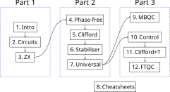

This book is called Picturing Quantum Software, but what is ‘Quantum Software’, and what does it mean to ‘Picture’ it? Broadly, quantum software refers to the ‘code’ that runs on a quantum computer. This can mean many different things at many different levels: ranging from quantum algorithms, i.e. high-level descriptions of how to solve problems with a quantum computer, all the way down to low-level code used to program specialised hardware like microwave emitters that are actually responsible for making things happen to quantum systems and reading out the results. This book is largely focused on what lies between those two levels and also how we can move from higher-level descriptions of a computation to lower-level ones. In classical computing, passing from a high-level programming language to low-level machine code is called compilation. Compilers are extremely important to making classical computers work, both because high-level programming is crucial to representing something as complex as an operating system or a web application and because a big reason why modern computers are so fast is because advanced compilers do huge amounts of optimisation to programs in order to squeeze as much performance as possible out of your computer.
As quantum computers are starting to take shape, so is a new field of quantum compilation. Instead of just directly focusing on the code that runs on quantum computers (e.g. quantum circuits, which we’ll introduce shortly), it is becoming increasingly interesting to focus on the ‘code that makes that code’ or even the ‘code that makes that code better’. There are a lot of interesting problems in this area, many of which we’ll touch on in this book. The problem most analogous to classical compilation is the following: given a high-level description of a quantum computation, can we build a quantum circuit to perform that computation?
Quantum circuits are a de facto assembly language for quantum computation, and form the most important part in how a quantum computation is described using the quantum circuit model. The latter is a straightforward way to describe quantum computations, which is computationally universal (in the sense we describe in Section 2.3.5). Quantum circuits give a simple description of a quantum process by means of a sequence of primitive operations, called gates, which are applied on a register of quantum memory, e.g.
Here, we have deliberately been a bit ambiguous about what a ‘high-level description’ means. This could be a program in a high level (quantum) programming language. Such languages do exist (as we’ll survey briefly in the references of Chapter 2), but are still in their infancy. At the time of this writing, it is still not clear which ‘genuinely quantum’ features are useful to have in a quantum programming language, and the majority of what gets called ‘quantum programming’ these days amounts to using some specialised libraries in a familiar classical programming language like Python to build (and sometimes run) quantum circuits. In fact, you can experiment with many of the techniques we discuss in this book using our Python library PyZX, but more on that later.
In addition to a program written in a high-level language, a high-level description of a quantum computation could mean various other things, depending on the application. For example, it could simply be a big unitary matrix, which as we will review in Chapter 2, are the way quantum processes are modelled mathematically. However, this method of representing a computation grows exponentially in size with the number of quantum bits, or qubits, involved in a computation, so it is not feasible for concretely representing computations on more than a dozen qubits or so. Also, we don’t know about you, but we don’t personally find staring at a matrix full of numbers to be the most enlightening way to understand what is actually going on.
This brings us to the other part of the title: ‘Picturing’. This book focuses heavily on representing quantum computations using pictures. Unlike the kinds of pictures you might know, e.g. from a physics textbook, where simple diagrams are used to aid our intuitions, but all the ‘real math’ happens in good old fashioned formulas, in this book, the diagrams are the real math. We will begin by introducing string diagram notation in the next chapter. This notation, usually attributed to Roger Penrose, gives a rigorous way to describe complex linear operators using diagrams consisting of boxes and wires like this one:
Perhaps the most interesting thing about such diagrams is that we can use them to directly calculate stuff by transforming one diagram into another. In particular, suppose we knew that two different diagrams actually describe the same linear map. Then we might write something like this:
| (1.1) |
We’ll see how such diagrams actually correspond to linear maps in Section 2.1.6, but even before we know that, it is possible to explain how we could use a diagrammatic equation like (1.1): if we see one side of this equation in a bigger diagram, we can ‘chop it out’ and replace it with the other side to get a new diagram:
Thus, from a small equation, we have derived a bigger one. This way of doing calculations directly on diagrams is called diagrammatic reasoning.
The ‘spiritual predecessor’ to this book, Picturing Quantum Processes (PQP), described the basic principles of quantum and classical processes and how they interact using diagrammatic reasoning. Along the way, it introduced a particular set of string-diagram equations called the ZX-calculus, which turns out to be extremely useful for doing just about anything you’d want to do with quantum circuits and related structures. However, that book just gave the slightest inkling of how one might apply ZX to solve concrete problems in quantum software, and didn’t say much about how the ZX-calculus picture relates to the whole myriad of techniques developed over the past few decades for designing and reasoning about quantum software.
In this book, we will dive straight into using the language of ZX to work concretely with quantum circuits. This turns out to be a very good language to explain many concepts in quantum software that were not originally introduced using diagrammatic methods, such as stabiliser theory, phase polynomials, measurement-based quantum computation, and quantum error correcting codes. Whether readers are familiar with these concepts or meeting them for the first time, the ZX-calculus offers an intuitive look at the few (relatively simple) structures at play, and how they come together to make quantum computations behave the way they do.
A simple, ‘Hello World’ style example is quantum teleportation, which we’ll go through in some detail in Section 3.3.2. This is a simple quantum protocol where Alice and Bob can use a shared entangled state and some classical communication to allow Alice to send an arbitrary quantum state to Bob. In a typical quantum computing textbook, you would probably see teleportation pictured like this:
followed by a fairly elaborate linear algebraic calculation to show that it actually works. By the time we get to Chapter 3, we’ll see that the ZX-calculus makes these kinds of calculations super easy. After translating the quantum circuit diagram above into ZX language, we can calculate what it does using just a few graphical rules:
In the end, we get just a wire passing from Alice to Bob, capturing that fact that any quantum state Alice starts with will pop out on Bob’s side.
We’ll see over the following nine chapters that these techniques can be pushed a lot further than toy examples to explain some of the most important structures, concepts, and algorithms in the design and analysis of quantum software.
We’re glad you made it here! Or, for those coming from Picturing Quantum Processes, we’re glad you made it back! This book caters to a variety of people with a variety of different backgrounds. As such, you may want to read this book differently depending on what you know already, and what you hope to get out of it. This section is intended to give a roadmap for a few different kinds of readers.
This book is designed to function well as a second course in quantum computing. However, this book is also designed to be pretty self-contained, which means there is nothing to stop you from diving in with nothing but a bit of linear algebra under your belt. Some basic topics are not covered in as much depth as you’ll find in a first text, and also some intuitions may be taken for granted. To adopt this strategy, we suggest you start with the next chapter, then if you get confused, or want to know something more in depth, pick up one of the following books to help you out:
Picturing Quantum Processes: A First Course in Quantum Theory and Diagrammatic Reasoning. [62]. Cambridge University Press.
Picturing Quantum Processes (PQP) is, in some sense, the prequel to the current book. It introduces quantum theory from first principles using a fully diagrammatic language, and uses that language to go into detail on quantum processes, quantum and classical interaction, quantum entanglement, quantum communication protocols, and a bit of quantum computing. We do not explicitly assume familiarity with PQP, but it can be read before or in parallel with this book to get a fuller picture.
Quantum in Pictures. [60]
A (nearly) math-free introduction to quantum theory using pictures, including the ZX-calculus. This is also good for younger readers and non-scientists and can probably be read in an afternoon.
Quantum Computation and Quantum Information. [196], (2000 first ed.). Cambridge University Press.
This is the standard text on quantum computing. It is a comprehensive introduction to the topic; it has been called the ‘bible of quantum computing’. However due to the amount of material covered, it is relatively long and dense, especially for readers starting from scratch.
Quantum Computer Science: an introduction. [182]. Cambridge University Press.
These are both shorter, gentler introductory texts in quantum computing. We’d suggest picking one of these up to learn quantum computing for the first time, and eventually grabbing a copy of Nielsen & Chuang for reference.
Categories for Quantum Theory: An Introduction. [131]. Oxford University Press.
The graphical notation we use in this book traces its origins back to categorical quantum mechanics, a category theory-based approach to studying quantum theory. While category theory is strictly optional to learn and use ZX-calculus, this book is for readers who are interested in the deep mathematical and categorical structures underlying the graphical calculus, such as Frobenius algebras, Hopf algebras, and 2-categories.
You will notice a few things if you’ve landed here straight from the ‘spiritual’ prequel to this book Picturing Quantum Processes: A First Course in Quantum Theory and Diagrammatic Reasoning (which we’ll call PQP in this section).
The first is we don’t mention process theories at all in this book, even though they were a big deal in PQP. Process theories give us a general way to talk about processes and computation that includes quantum theory but also many other theories, such as classical probability theory and even ‘super-quantum’ theories which allow processes which (we think) are not physically possible.
While it is fascinating, and foundationally important, to understand quantum theory as just one example of many possible ways the world could have been, we will forgo discussion of generic process theories in this book and assume everything is quantum, right from the beginning! Well, that’s actually not quite true. PQP introduced a process theory of linear maps, where wires represent Hilbert spaces and boxes represent linear maps, then obtained the theory of quantum maps by some diagrammatic trickery. For simplicity, we will pretty much exclusively work in the theory of linear maps in this book. As you might recall from PQP, linear maps are pretty much the same thing as pure quantum maps, as long as we (1) compute probabilities by taking the absolute value squared of complex numbers, and (2) throw away global phases. It turns out, for all of the concepts in this book, that’s good enough for us!
This extra simplicity comes at a price, in that we don’t give ourselves access to the elegant graphical techniques for representing mixed quantum states and processes as well as classical-quantum interaction. However, readers with a good handle on these techniques from PQP will probably notice many places they can be applied throughout this book, and we invite them to explore and be creative when filling in these gaps.
One final difference to note, is that in PQP time in diagrams flowed from the bottom to the top, while in this book every diagram should be read from left to right.
If you are already used to looking at , but not necessarily pictures of quantum processes, welcome! We have tried to write this book such that readers with little prior experience with the graphical notation for quantum maps will start to feel comfortable with it in no time, and start using diagrams as a natural extension of the quantum circuit notation you undoubtedly already know and love.
You may want to briefly look through Section 2.1, and in particular 2.1.6, as we introduce the graphical notation for linear maps along side the usual bra-ket notation. In those sections, we explain the 3-fold correspondence between bra-ket language, tensor networks, and string diagrams. We use this correspondence throughout the book, in order to freely switch to whichever tool is best for the job at hand (spoiler alert: it is usually string diagrams!).
After going through Section 2.1, you’ll probably not have much problem skipping over the rest of Chapter 2 and diving straight into the ZX-calculus in Chapter 3.
Note that even if you are already familiar with some of the concepts we talk about in this book, you might find that we approach it with quite a different perspective. So even for the quantum computing expert there should be enough to discover in this book!
Throughout the book you will see certain remarks, sections and exercises with a star*. We consider this to be ‘optional’ material. For the Remarks*, these usually explain some technical details that we otherwise glossed over which are not that important to understand the main points in the chapter, but are necessary to have a fully correct mathematical picture. You can read these if you want to know the technical nitty-gritty. The Sections* usually cover additional material that is either more advanced, more technical, or simply acts as a nice dessert to the chapter they are in, so feel free to only read these if you are particularly interested in the topic. The starred Exercises* are extra hard exercises that are (much) more time consuming than the regular exercises, and might require you to make larger jumps on logic or rely on a larger set of tools to solve it. We recommend you skip solving these on a first read-through as there more than a hundred regular exercises you can try first.

This book can be split roughly into three parts, as shown in Figure 1.1. In the first part of the book, Chapters 1–3, we introduce the basics of quantum computation and the main tool we’ll be using throughout the book: the ZX-calculus. After this introductory chapter, we move to Chapter 2: The Quantum Circuit Model, which briefly reviews the mathematical preliminaries you will need (namely linear algebra over the complex numbers) and gives a short, pragmatic introduction to quantum theory by explaining what we call the SCUM postulates.
We then introduce some basic building blocks of quantum circuits, and explain some of the most important facts about circuits, such as universality of gate sets, which we will use throughout the book.
What you will NOT find in this chapter (as opposed to virtually any other introduction to quantum computing) is much discussion about quantum algorithms. These of course are the reason one wants to study quantum computation in the first place. However, since we will be focusing on quantum compiling in this book, we will mostly abstract over specific quantum algorithms and focus mainly on the sorts of circuit structures that arise from typical algorithms and how to work with them effectively. To get a deeper appreciation for how specific algorithms yield the kinds of circuits we will study, we encourage readers to have a look at some of the resources mentioned in Section 1.1.1 and also in the References and Further Reading sections at the end of each chapter.
Chapter 3: The ZX-Calculus introduces ZX-diagrams, the main graphical representation we’ll use for all the quantum computations we study in this book, as well as the ZX-calculus, a simple set of rules for transforming and simplifying ZX-diagrams. We also give some examples of ZX in action, where we show how to perform simple computations using ZX. We focus mainly here on manipulating ZX-diagrams by hand, leaving the more high-powered theorems and automated techniques involving the ZX-calculus for later.
The next part of the book, Chapters 4–7, build up slowly from very restricted families of circuits and ZX-diagrams to full-powered, universal quantum computation. In Chapters 4 and 5, we introduce particular, non-universal gate sets, and corresponding fragments of the ZX-calculus, whose unitary ZX-diagrams are precisely the circuits constructible in those gate sets.
A natural question is then: Why consider more limited kinds of quantum computations and not just jump straight to maximum power? This is because, like in many areas of science, there is a delicate balancing act between how powerful a system is and how much we can say about it.
The paradigmatic example in classical computation is Turing machines. These are super powerful, so powerful that if a computation is even possible to do on a computer (classical or quantum!), then it is possible with a Turing machine. However, if we pluck a Turing machine out of the air, we can say almost nothing about it. We don’t even know if it will halt with an answer or just run forever. At the other extreme are finite state machines. These are much, much weaker than Turing machines, but we can compute (often efficiently) pretty much anything we want to know about them. Does this machine ever answer Yes for some input? How about infinitely many inputs? Do these two machines actually do the same thing? These questions and many others are pretty easy to answer for finite state machines, but extremely hard for Turing machines.
A similar thing can be said for quantum computations. The more powerful the gate set, the closer we are to fully universal quantum computation, and the more difficult it becomes to simulate, optimise, and answer questions about, the quantum circuits we can build. Generally this should be regarded as A Good Thing. Indeed if it were possible to efficiently simulate universal quantum circuits, you wouldn’t be reading this book in the first place.
However, it is nevertheless an interesting and fruitful question to ask what kinds of quantum computations can be simulated on a classical computer or otherwise efficiently reasoned about. It turns out this goes much farther than one might initially expect.
In Chapter 4: CNOT Circuits and Phase-Free ZX-Diagrams, we look just at those circuits constructible using CNOT gates (and nothing else), and show these are closely connected to the phase-free ZX-calculus, i.e. the calculus involving ZX-diagrams whose phase parameters are all restricted to zero. This will give us some important insights into how this single entangling gate interacts with itself, and how linear algebra over the two-element field plays an important role in the structure of quantum computations. We will also meet the first automated simplification strategy for ZX diagrams, which always efficiently terminates for phase-free diagrams in what we call a normal form. These normal forms can tell us a lot about a computation, and also admit strategies for extracting circuits back out. Furthermore, these normal forms will come back with a vengeance when we discuss quantum error correcting codes in Chapter 12.
In Chapter 5: Clifford Circuits and Diagrams, we add the H and S gates to CNOT circuits to obtain a much richer, much ‘more quantum’ family of circuits, the Clifford circuits, while still retaining lots of structure, and importantly, efficient classical simulability. Clifford circuits, despite leaving the realm of what we would normally call classical computation, are efficiently classically simulable thanks to the Gottesman-Knill theorem. We will take an unconventional route to proving this famous theorem by going via the corresponding fragment of the ZX-calculus: the Clifford ZX-calculus, whose phase parameters are restricted to be integer multiples of . Like in the phase-free case, we give an automated strategy for efficiently turning any Clifford ZX-diagram into a compact normal form. In fact, we’ll look at two different normal forms, which are closely related, and can be applied to solve three important problems for Clifford circuits: efficient classical simulation, equality testing, and circuit optimisation/resynthesis.
In Chapter 6: Stabiliser Theory, we introduce an equivalent, and more widespread, technique for studying Clifford circuits, called stabiliser theory. Rather than restricting the class of gates used to build Clifford circuits, we give a more global, group-theoretic characterisation of the Cliffords in terms of certain subgroups of the Pauli group called stabiliser groups. Such a group can always be represented by listing a small number of generators, and this in turn enables us to perform many tasks involving Clifford circuits efficiently by working not with the (exponentially large) unitary matrix, but with this set of generators of the stabiliser group. Using this formalism, we will see a more traditional approach to proving the Gottesman-Knill theorem, and also how to get the best of both worlds by converting back-and-forth between stabiliser and ZX representations.
Finally, in Chapter 7: Universal Circuits, we meet full-powered quantum computation. We will see that it is useful to treat universal circuits as Clifford circuits with a bit of ‘special sauce’ mixed in: namely arbitrary Z-phase gates. We first see what happens when we mix arbitrary phase gates into CNOT circuits, and we find we can reuse some of the tricks from Chapter 5 to efficiently represent the resulting unitaries. A structure that emerges naturally is that of phase polynomials, which have a graphical ZX representation using phase gadgets. We will also show that there are two ways to extend phase polynomials/gadgets to model universal circuits: using path sums and Pauli gadgets, each with various benefits and applications. We will show how these structures can be used to implement a simple circuit optimisation technique called phase folding. We will find many other applications for these structures in Chapters 10–12.
At the end of this second part of the book we have Chapter 8: Cheatsheets. Here we give an overview of many of the different diagrams, rewrites and normal forms we have seen up to this point. This serves mostly as a reference, or to be printed out separately.
The third part of the book extends the structures developed in part 2 in various different directions. Until this point, the dependency between chapters is essentially linear, but here it splits.
On one track is Chapter 9: Measurement-based Quantum Computing, where we introduce an alternative model of quantum computation called measurement-based quantum computation (MBQC), and show how it is equivalent to the circuit model. In the process, we will learn some new things about the structure of ZX diagrams, which turn out to be closely related to certain kinds of measurement-based quantum computations. Notably, we will see when it is possible to efficiently extract a quantum circuit from a ZX-diagram (or MBQC computation) using a graph-theoretic notion called generalised flow. While not strictly necessary to understand the following chapters, the idea of using measurements and corrections to deterministically implement quantum operations will be a running theme in this part of the book.
On the other track, we continue to develop the structure of universal quantum circuits. In Chapter 10: Controlled Gates and Classical Oracles, we see how the basic gates and ZX-diagrams we have studied so far can be used to construct higher-level gates, particularly to add control wires and to embed complicated classical functions into quantum computations. We will introduce a new spider-like generator for ZX-diagrams called the H-box which is especially convenient for dealing with these higher-level structures and explaining how phase gadgets and H-boxes are related to each other by a type of graphical Fourier transform.
In Chapter 11: Clifford+T, we will specialise from the exactly universal computations we have been studying so far to Clifford+T circuits. Remarkably, if we add just one additional gate, called the T gate, to Clifford circuits, we obtain an approximately universal family of quantum circuits. The graphical analogue to such circuits are Clifford+T ZX-diagrams, i.e. diagrams whose phase parameters are integer multiples of . It turns out that when we restrict the angles in this way (and more generally to angles of the form ), lots of interesting new structures start to emerge. We explore how these structures can be used to efficiently approximate any unitary using Clifford+T circuits, perform certain sophisticated circuit optimisations, and prove completeness and universality results for increasingly larger fragments of the ZX-calculus.
Finally, in Chapter 12: Fault-tolerant quantum computation, we introduce quantum error correction and fault-tolerant quantum computation. This brings together almost all of the concepts that have come before. Notably, we use the phase-free normal forms we met back in Chapter 4 to construct a graphical depiction of encoder maps, which enable error correction by embedding a collection of logical qubits into a larger collection of physical qubits. We see how to check for errors in this encoded quantum data using measurements represented by the Pauli projections from Chapter 6, and build toward a universal set of fault-tolerant operations for implementing quantum computations on encoded qubits. An important ingredient is something called magic-state distillation, which we can derive using the structure of T gates developed in Chapter 11. Once we distil magic states, we can inject them into our computations using a technique we met way back in Chapter 2! Putting all of these ingredients together, we obtain a way to implement universal quantum computation in a way that can, in principle, be made arbitrarily robust to errors.
So that’s the plan. Let’s get started!
The origin of this book can be traced back to 2017 (it can be traced back arbitrarily far of course, but we have to start somewhere). In particular, the year 2017 was an auspicious year for the ZX-calculus, as well as for John and Aleks. Let’s summarise the components that all fed into the eventual existence of this book based on all the things happening in 2017.
First of all, Aleks’ first book Picturing Quantum Processes (PQP), coauthored with Bob Coecke, was published by Cambridge University Press. This book, which has since become broadly referred to as ‘The Dodo book’, due to featuring a big purple dodo called Dave on the cover and throughout, explained quantum theory and quantum computing fully diagrammatically. While the ZX-calculus was a part of PQP, it was the endpoint rather than the starting point.
Second, 2017 was also the year that the first completeness results, by parallel groups at Oxford (Amar Hadzihasanovic, Kang Feng Ng, Quanlong Wang) and Nancy (Emmanuel Jeandel, Simon Perdrix, Renaud Vilmart), for universal fragments of the ZX-calculus came out. This showed that the calculus was, well, complete, and ready to be used.
Third, this is also 10 years after the appearance of the first paper defining the ZX-calculus by Bob Coecke and Ross Duncan. In honour of the occasion, Aleks and Bob organised a ‘birthday party’ conference in Oxford. At the time, you could pretty much fit everyone working on the ZX-calculus comfortably in one room, which they did, upstairs at the Jericho Tavern.
Fourth, Niel de Beaudrap and Dominic Horsman gave a full description of how the ZX-calculus can be understood as a language for reasoning about lattice surgery in surface codes. This eventually led to ZX becoming a more and more standard tool for usage in surface code computations, expanding the group of people working with the ZX-calculus (and also serving as a starting point into the research that led to the final chapter in this book).
And finally, 2017 was the year that Aleks and John (who had just started his PhD under Aleks) started looking at how to solve practical quantum computing problems using the ZX-calculus. This eventually led to the development of PyZX, the Python library for automated rewriting of ZX-diagrams, and papers with Simon Perdrix and Ross Duncan showing how ZX can be used to optimise quantum circuits, in some cases even better than you could with existing methods.
The actual pre-work on this book began in 2020. ZX-calculus was picking up more steam, so John, currently unemployed, felt it was time for an accessible introduction, which led to his review article ZX-calculus for the working quantum computer scientist. Unbeknownst to John, Aleks had already starting working on a ‘ZX book’ as a sequel to PQP, and was planning to pitch it to Cambridge University Press later that year. When he found John’s paper he figured it would be best to join forces (and also since he realised he would never actually have the motivation to finish a book by himself). The plan was to write a 250 page book within a year. As you can see by the number of pages in this book and the date of publishing, this did not happen. The observant reader might at this point notice that the preface of PQP mentions that the authors had planned for that book to be a lot shorter and written within a year as well. We leave the observant reader to draw their own conclusions from this.
Incidentally, the cover of this book is a reference to PQP. In that book, Dave the Dodo featured on the cover and throughout, as he struggled to come to grips with the fundamental nature of our universe (or at least not get eaten by a polar bear). Our mascot is Coco the Crow, the sunglass-wearing, tool-using, cool bird ready to learn all about quantum software. Thanks to Konstantinos Meichanetzidis for the name and the vibes.
This book was produced between 2021–2025 and in that time has improved considerably by the input of many people. The authors received invaluable guidance from students and teaching assistants involved in the courses Quantum Software in Oxford and Full-Stack Quantum Computing in Amsterdam for which early drafts of this book served as lecture notes. This ranged from correcting typos and inconsistencies to getting a much clearer picture of what works and what doesn’t when teaching this material to wide range of people for the first time. Special thanks go out to the TAs Lia Yeh, Razin Shaikh, Luca Mondada, Hector Miller-Bakewell, Hamza Waseem, Nicola Pinzani, Will Simmons, Alex Cowtan, Matthew Sutcliffe, Benjamin Rodatz, Jonathan Tanner, Varad Vishwarupe, Sarah Meng Li and Gina Muus.
A draft of this book has been available online on a Github page, where people have been able to share errors and typos present in the book. Lots of people have pointed out single typos, but some others took the time to point out multiple inconsistencies. These include David Philipps, abubuwe, and OzYossarian. Additional typos were found by Arianne-Meijer van de Griend, and Niel de Beaudrap, Tuomas Laakkonen, and an in-depth reading by Sarah Meng Li found many more typos and inconsistencies.
John wishes to acknowledge the funding he received between 2021–2025 that assisted in writing this book: first an NWO Rubicon grant, followed by an EU Marie-Skłodowska-Curie fellowship during his postdoc in Oxford. His NWO Veni during his time in Amsterdam assisted in the travel funding required to visit Oxford to work on this book. Aleks has been supported during the writing of this book through several grants, including the US Air Force Office of Scientific Research grant FA2386-18-1-4028 and the Engineering and Physical Sciences Research Council grant numbers EP/Y004736/1, EP/W032635/1, and EP/Z002230/1.
Finally, the authors would like to thank Bob Coecke and Ross Duncan for their insights, support, and friendship over the past 2 decades, and of course for inventing the ZX-calculus. While it is a platitude to say that without them, this book would have been impossible, here it is quite obviously true.